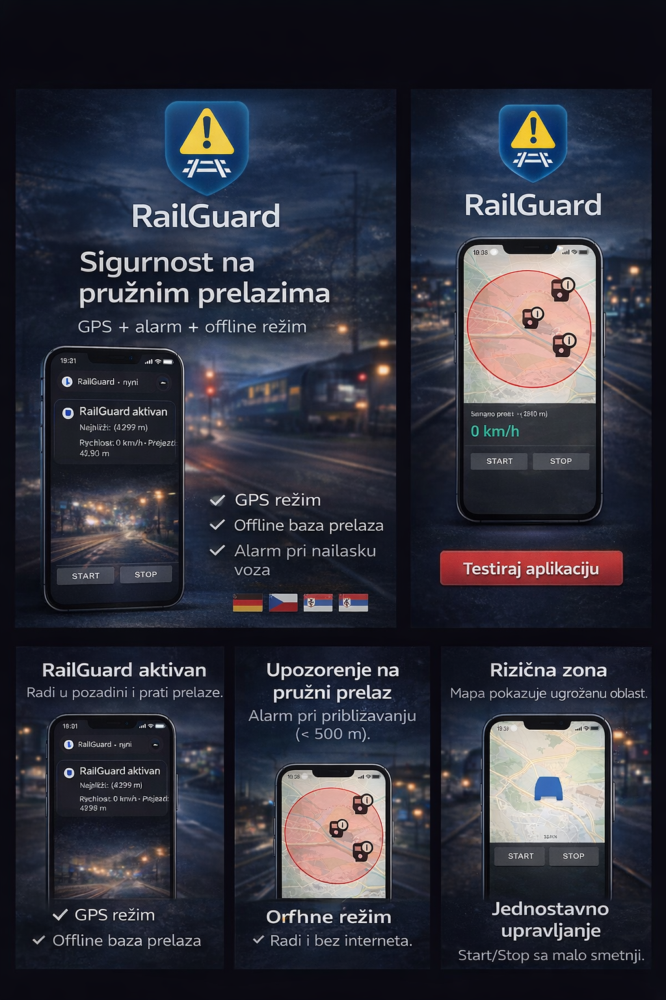

Praćenje kretanja + analiza rizika + alarm. Dizajnirano da radi i u slabom signalu.
Vozači, dostavljači, radnici u smenama i svi koji često prolaze kroz prelaze bez rampe.
1) GPS i pravac kretanja → 2) procena rizika (baza prelaza + vozni red) → 3) zvučno/vizuelno upozorenje.